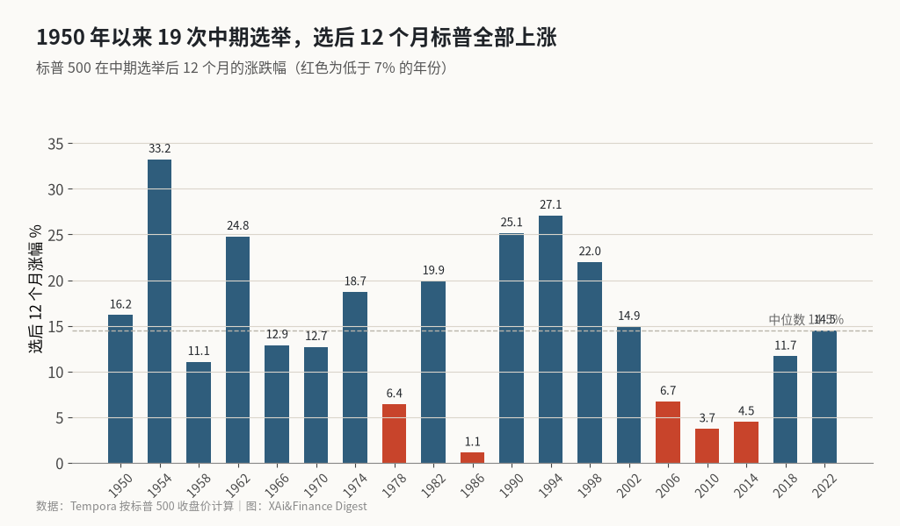
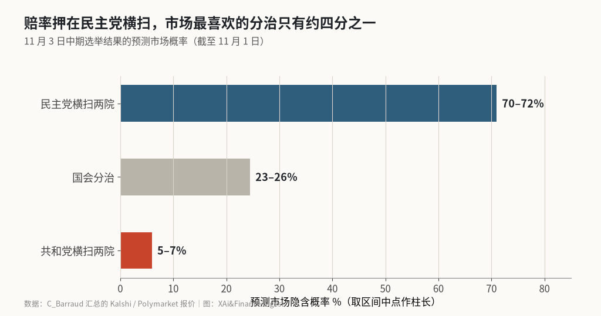

中期选举周：历史胜率 19 比 0，赔率却押在市场最不喜欢的结果上
1950 年以来 19 次中期选举，标普 500 在选后 12 个月全部上涨，中位数 14.5%；但预测市场给民主党横扫两院 70–72% 的概率，而彭博梳理的情景里，这恰恰是短期最容易引发抛售的组合。大摩 Wilson 的路线图是先到 7,100 点、再上 8,000 点。
本周美国有三件大事挤在一起：周一盘后苹果发财报，周二（11 月 3 日）中期选举投票，周五（11 月 6 日）公布 10 月非农。北美已进入冬令时，美股从本周起改为北京时间 22:30 开盘。
背景是一个糟糕的十月。10 月 30 日标普 500 下跌 1.8%，收于 7,580.07 点，纳指跌 2.9%，英特尔单日暴跌 28.6%。在这种时候讨论中期选举，市场最关心的只有一个问题：选举是让这轮回调结束的事件，还是让它加深的事件？
先说结论：历史规律明确站在多头一边，但今年的赔率分布偏向市场最不喜欢的结果。短期波动大概率还在，长期胜率依然很高，两件事要分开看。
选后 12 个月标普涨幅图

Tempora 按标普 500 收盘价计算，从选举日前最后一个收盘价到一年后的第一个收盘价，1950–2022 年的 19 次中期选举无一下跌，中位数 14.49%，平均 15.11%。最好的是 1954 年的 33.22%，最弱的是 1986 年的 1.12%。富国银行的说法与此一致：二战后每一次中期选举后的 12 个月，标普都是上涨的。
但这张图不等于“选举年一定好”。同一组统计里，19 个中期选举年的全年表现只有 11 年上涨，中位数仅约 1%。常见的解释是：选前的不确定性压低风险偏好，选举一结束，无论谁赢，悬念消失本身就是利好。
预测市场的结果分布图

C_Barraud 汇总的预测市场报价显示，民主党横扫两院的概率为 70–72%，国会分治为 23–26%，共和党横扫只有 5–7%；民主党拿下众院的概率超过 90%。PeterSchiff 提到，民主党拿下参院的概率升到 72%，是新高。值得一提的是，9 月初民主党横扫的概率还不到一半，两个月里翻转了局面。目前参院是共和党 53 比 47 占多数。
三种结果对市场的含义对照
| 结果 | 预测市场概率 | 彭博梳理的市场影响 |
|---|---|---|
| 民主党横扫两院 | 70–72% | 抛售风险最大，AI 与数据中心监管预期升温 |
| 国会分治 | 23–26% | 被视为最理想的组合，花旗 Stuart Kaiser 认为最利好股市 |
| 共和党横扫两院 | 5–7% | 利好部分特定板块 |
为什么市场偏爱分治？Carson 的统计给了一个量化答案：共和党总统搭配分治国会时，标普年均涨 13.7%；共和党控制国会时为 8.3%；民主党控制国会时为 4.9%。今年概率最高的情形，正好对应历史上收益最低的一档。
不过这组数字有一个容易被忽略的前提：4.9% 依然是正收益。民主党即使横扫两院，也拿不到推翻总统否决所需的三分之二多数。特朗普已经表态，如果民主党赢得国会，“我会成为否决先生”，之后“可能会谈交易”。彭博的结论也是，横扫的最可能结果是立法僵局，而僵局对股市未必是坏事。
7,100 点和 8,000 点之间的算术
摩根士丹利的 Mike Wilson 是这周被引用最多的策略师。他在 11 月 1 日的节目里把中期选举、AI 资本开支担忧和流动性收紧列为三个“清算事件”，认为标普可能从历史高点下跌约 9%，到 7,100–7,200 点一带，然后反弹到年底目标 8,000 点；半导体在 11 月中旬前可能再跌 10%–15%。他的建议是，无论谁赢，都买入这次回调。
把这些点位换成从 10 月 30 日收盘出发的距离：7,580.07 点距历史高点约 3.1%，跌到 7,100 点还要再跌约 6.3%；从 7,100 点涨到 8,000 点需要约 12.7%；而从 7,580.07 点直接到 8,000 点只需约 5.5%。也就是说，Wilson 的路线图里，年底目标并不激进，难的是中间那一段先跌后涨的路径。
空头的理由集中在流动性和 AI 投资
空头的理由比多方具体，集中在 AI 投资和流动性两头。bboczeng 推算，民主党胜选后至少有 30.3GW 的算力项目可能暂停建设，部分 NeoCloud 和云厂商的订单积压会受冲击。⚠️ 这个数字是个人推算，没有公开的项目清单可以对照。
RaoulGMI 的视角更宏观：美元、利率和油价同时上行，三者都在收紧金融条件，而特朗普在选前希望三者都回落，油价可能要靠伊朗问题的解决。Kalshi 的快讯称对冲基金正以史上最快的速度撤出美股；Jim Cramer 则警告科技股这一周“可能更糟”。
中东是另一个变量。Axios 报道称以色列总理内塔尼亚胡正敦促特朗普在中期选举后立即打击伊朗；而伊朗方面称正在谈判，可能两天内重开霍尔木兹海峡。两条消息方向相反，都可能在选后迅速影响油价。
历史上的反例也要看
历史上的反例同样存在，19 比 0 的胜率很容易让人忽视过程。2018 年选后 12 个月标普最终上涨 11.66%，但选后不到两个月就经历了一轮急跌，在年底前后一度逼近熊市边缘。那一年的背景是美联储持续加息和贸易摩擦，和今年流动性收紧、AI 投资受质疑的组合有相似之处。MrMikeInvesting 拿 2022 年作类比：当时联邦基金利率同样在 3.75%–4%，同样是中期选举，加密市场同样在探底。2022 年选后 12 个月，标普涨了 14.49%。
胜率站多方，路径取决于流动性
这一周最大的风险不在投票结果本身，而在结果与流动性叠加：如果民主党横扫的同时非农强劲、利率继续上行，市场可能把“AI 监管 + 紧缩”一起定价，Wilson 说的 7,100 点就会成为现实。机会在于，选举一结束不确定性随之消失，历史上这是最可靠的季节性顺风之一。
若回调真的走到 7,100 点附近、但盈利预期没有下修，那更像 Wilson 所说的清算而不是转势；反过来，如果 10 年期美债收益率和美元在选后继续走高、半导体再跌 15% 以上，历史胜率能提供的安慰就有限了。
X 上怎么看
结论 · 长期偏多共识、短期分歧：历史胜率高，但结果分布偏向横扫
▲ 看多3 位
▼ 看空5 位
● 分歧或中性4 位
观点为 X 用户当日公开帖子的中文摘要，忠于原文但有删减；标「未核实」的为预测、个人推测或单一来源说法。立场为人工判断。
数据来源
- 19 次中期选举后 12 个月涨幅、中位数与均值来自 Tempora 按标普 500 收盘价的计算，不含股息；选举年全年只有 11 年上涨为同一来源。
- 预测市场概率取自 C_Barraud 对 Kalshi、Polymarket 报价的汇总，截至 11 月 1 日。
- 7,100 点距收盘 −6.3%、7,100 至 8,000 点 +12.7%、7,580.07 至 8,000 点 +5.5% 为按点位计算。
- 30.3GW 算力暂停为个人推算；对冲基金撤离速度为快讯，未见原始数据。
- https://www.tempora.ltd/findings/us-midterms-2026-equity-base-rates
- https://www.businesstimes.com.sg/international/what-different-us-midterm-outcomes-could-mean-markets
- https://www.bloomberg.com/news/articles/2026-11-01/mike-wilson-says-buy-stock-dip-regardless-of-who-wins-midterms
- https://apnews.com/article/wall-street-stocks-dow-nasdaq-a01d3551e794fed1a0c317c20bc3f0a2
- https://x.com/C_Barraud/status/2116877695749394725
- https://x.com/C_Barraud/status/2116944305713795362
- https://x.com/PeterSchiff/status/2116929600957939871
- https://x.com/bboczeng/status/2116906107033776452
- https://x.com/bboczeng/status/2116977291800834271
- https://x.com/bboczeng/status/2116997790870175916
- https://x.com/TruthTrumpPost/status/2116944041250025595
- https://x.com/RaoulGMI/status/2116852542638264735
- https://x.com/Kalshi/status/2116983621856936241
- https://x.com/The_RockTrading/status/2116689506569224695
- https://x.com/MrMikeInvesting/status/2116980212273754469
- https://x.com/spectatorindex/status/2116973496253505755
- https://x.com/Polymarket/status/2116705281451360511
- https://x.com/YoooJJ8cm/status/2116898529230651706